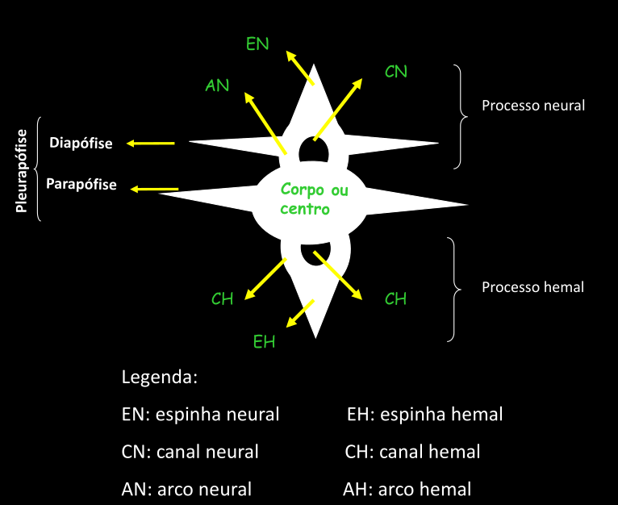
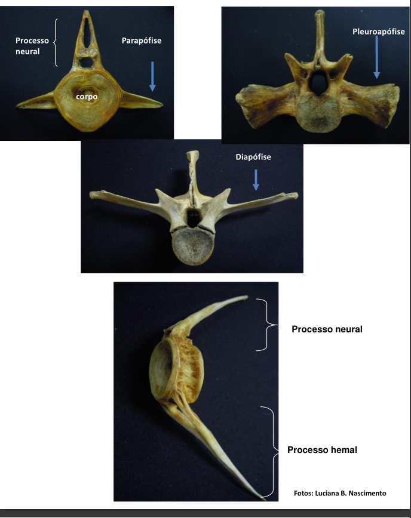
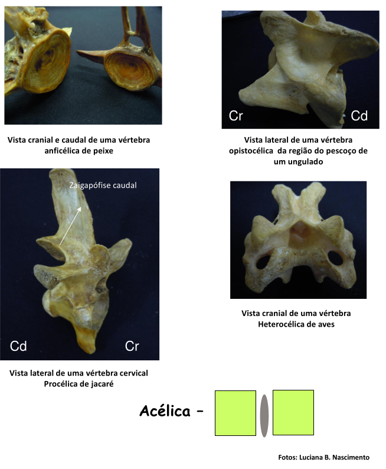
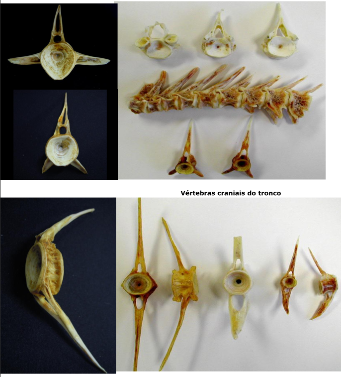
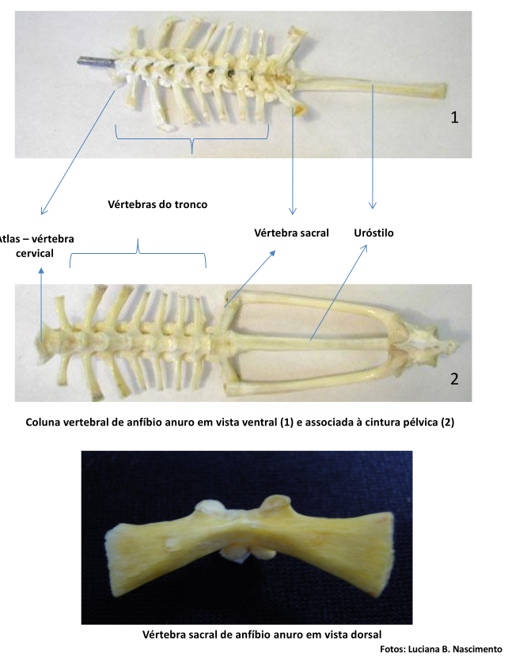
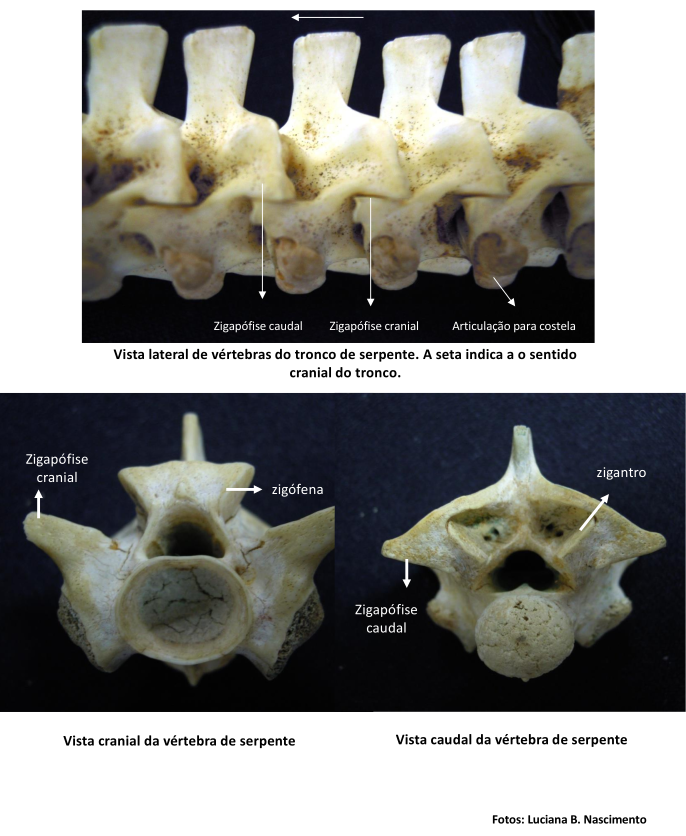
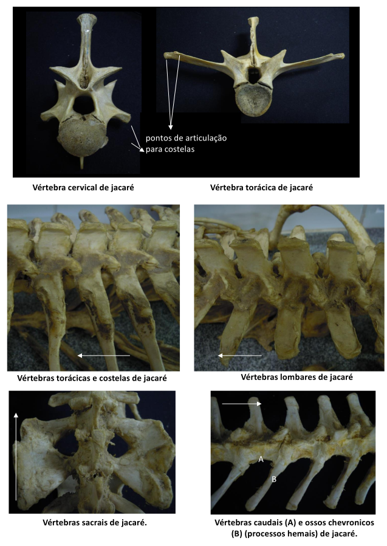
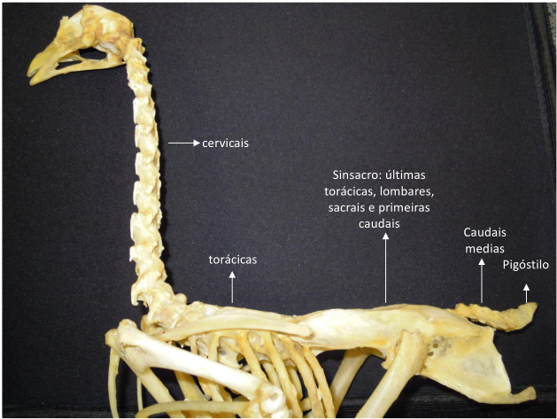
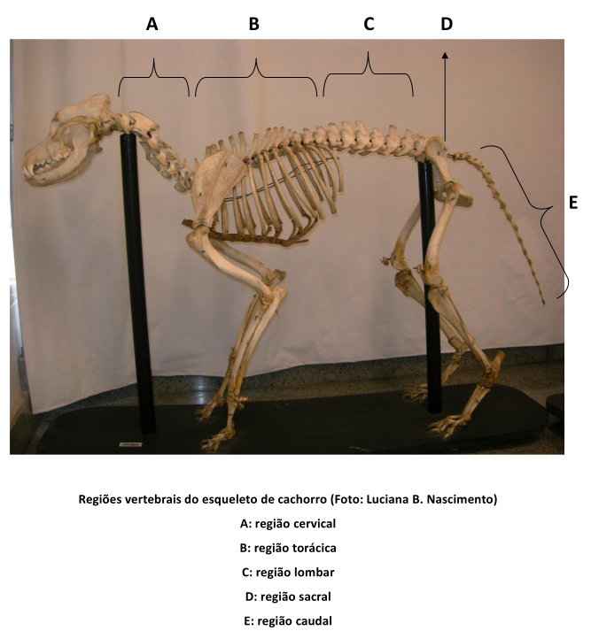

Guia Prático: O Eixo Vertebral
Anatomia Funcional das Vértebras e Coluna
Prof. Conrado A. B. Galdino
I. Estrutura Básica da Vértebra
Inicie a investigação observando o modelo esquemático de uma vértebra-tipo, baseado nas páginas 2-3 da apostila.

Roteiro de Investigação (Bancada):
Agora, explore as vértebras avulsas de diversos grupos sobre a mesa. Tente identificar os seguintes componentes:

- Corpo ou Centro Vertebral
- Arco Neural (forma o Canal Neural)
- Arco Hemal (forma o Canal Hemal)
- Processos: Espinha Neural, Diapófise, Parapófise, Pleurapófise
- Zigapófises Cranial (pré) e Caudal (pós)
II. Classificação do Corpo Vertebral
Roteiro de Investigação (Bancada):
A forma das faces cranial e caudal do corpo vertebral determina a mobilidade da coluna. Observe as vértebras sobre a bancada e classifique-as segundo o corpo vertebral, consultando a página 4 da apostila.
- Acélica: Ambas as faces planas (ex: Mamíferos).
- Anficélica: Ambas as faces côncavas (ex: Peixes).
- Procélica: Face cranial côncava, caudal convexa (ex: Répteis).
- Opistocélica: Face cranial convexa, caudal côncava (ex: Ungulados).
- Heterocélica: Faces em forma de sela (ex: Aves).

III. Estação 1: A Coluna Homogênea (Peixe)
- Material: Esqueleto de Peixe.
- Investigação: A coluna é regionalizada?
- Observação: Diferencie as vértebras do tronco das caudais. A pista é a presença do Arco Hemal (para proteger vasos) nas caudais. Identifique o corpo anficélico.
- Conclusão: A coluna possui baixa regionalização, sendo adaptada primariamente à natação.

IV. Estação 2: A Coluna para o Salto (Anfíbio)
- Material: Esqueleto de Anfíbio Anuro (sapo/rã).
- Investigação: O que mudou na transição para a terra?
- Observação: Identifique a *única* vértebra **cervical (Atlas)**, o número reduzido de vértebras do tronco, a *única* vértebra **sacral** (que se liga à cintura pélvica) e a fusão das vértebras caudais no **Uróstilo**.
- Conclusão: Uma estrutura curta, rígida e especializada para absorver o impacto do salto.

V. Estação 3: Diversificação em Terra (Répteis)
- Material: Esqueleto de Serpente e Crocodiliano.
- Investigação: Como diferentes répteis adaptaram a coluna?
- Observação (Serpente): Identifique as articulações acessórias Zigósfena e Zigantro. Elas fornecem grande estabilidade e evitam a torção da coluna durante a locomoção ondulatória.
- Observação (Crocodiliano): Note a clara regionalização (Cervical, Torácica, Lombar, Sacral, Caudal). Nas vértebras caudais, identifique os Ossos Chevronicos (processos hemais).


VI. Estação 4: A Fuselagem Rígida (Aves)
- Material: Esqueleto de Ave.
- Investigação: Como a coluna se adapta ao voo?
- Observação (Pescoço): Note o grande número de vértebras cervicais com corpo heterocélico (selar), permitindo extrema mobilidade.
- Observação (Tronco): Identifique as grandes fusões que criam rigidez para o voo: o Sinsacro (fusão das últimas torácicas, lombares, sacrais e primeiras caudais) e o Pigóstilo (fusão das últimas caudais para suporte das penas da cauda).
- Conclusão: Rigidez máxima no tronco para o voo, contrastando com mobilidade extrema no pescoço.

VII. Estação 5: Mobilidade Cefálica (Mamíferos)
- Material: Esqueleto de Mamífero.
- Investigação: Qual a principal especialização da coluna dos mamíferos?
- Observação (Regiões): Identifique claramente as 5 regiões: Cervical, Torácica (com costelas), Lombar (sem costelas), Sacral (fundida na pelve) e Caudal.
- Observação (Foco): Investigue o complexo das duas primeiras vértebras cervicais.
- Atlas (C1): Não possui corpo vertebral; articula-se com o crânio (movimento de "sim").
- Axis (C2): Possui o Processo Odontóide, que age como um pivô para o Atlas (movimento de "não").
- Conclusão: Coluna altamente regionalizada e com especialização cervical única para a mobilidade da cabeça.


VIII. Jogo de Consolidação
Para revisar, associe cada especialização vertebral ao grupo de vertebrados correspondente.
| Especialização da Coluna | Grupo de Vertebrados |
|---|---|
| Sinsacro e Pigóstilo (fusões extremas) | |
| Complexo Atlas/Axis com processo odontóide | |
| Corpo anficélico e Arco Hemal nas caudais | |
| Articulações acessórias (Zigósfena e Zigantro) | |
| Uróstilo (fusão caudal) e apenas uma vértebra cervical |